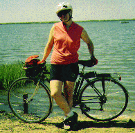
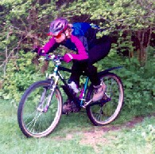

|  | Myra's |
 |
I'm very into cycling. It is one of my main hobbies and is my main form of exercise. I ride to get to work and to go shopping, and I ride on and off-road for fun when I can find the time. I like riding at night, and have had some fun putting together lighting systems for doing so. Nowadays most of the time I ride I have my kids with me: my daughter rides her own bike, and my son goes on the back of our childback tandem. Cycling always has been a part of my life, and (as long as I am physically capable) it will always be a part of my life.